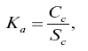
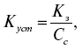
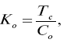

| Коэффициент обеспеченности запасов собственным оборотным капиталом: 1) Козок = СОК / З Коэффициентами, также характеризующими финансовую устойчивость, являются коэффициент автономии Ка и коэффициент обеспеченности оборотных активов Кооа (данные коэффициенты в то же время характеризуют структуру капитала организации): 2)  где Ка – коэффициент автономии; Сс – собственные средства; Sс – сумма всех источников (валюта баланса); 3) Кооа = СОК / ОА; 4)  где Куст – коэффициент устойчивости; Кз – кредиторская задолженность и другие заемные средства (без кредитов банков и займов); Сс – собственные средства; 5) Км = (СК-ВА) / СК, где Км – коэффициент маневренности; СК – собственный капитал (стр. 490 баланса); ВА – внеоборотные активы (стр. 190 баланса); 6) КТЛ = ОА / ВТО, где КТЛ – коэффициент текущей ликвидности; ОА – оборотные активы (стр. 290 баланса); ВТО – внешние текущие обязательства, где ВТО = ТО (стр. 690) – резерв предстоящих расходов (стр.650) и доходы будущих периодов (стр. 640); 7) Ка/ликв = Анл / ТО, где Ка/ликв – коэффициент абсолютной ликвидности; Анл – наиболее ликвидные активы (денежные наличные средства в пути, на счетах, краткосрочные финансовые вложения (например в ценные бумаги), долгосрочные финансовые вложения); 8)  где Ко – коэффициент оборачиваемости; Тс – объем товарной продукции; Со – средний остаток оборотных средств, участвующих в обороте. Коэффициент общей ликвидности определяет потенциальную способность предприятия расплачиваться по текущим обязательствам за счет имеющихся оборотных активов. Снижение коэффициента ликвидности говорит о том, что возможностей у предприятия по погашению обязательств остается все меньше, следовательно, необходимо найти причины ухудшения ситуации и варианты ее исправления. Причина снижения коэффициента ликвидности: вовремя неоплаченные те или иные счета – это происходит осознанно по простой причине – не хватает собственных средств на ведение текущей деятельности компании. К тому же заработанные собственные средства – это, безусловно, прибыль. |